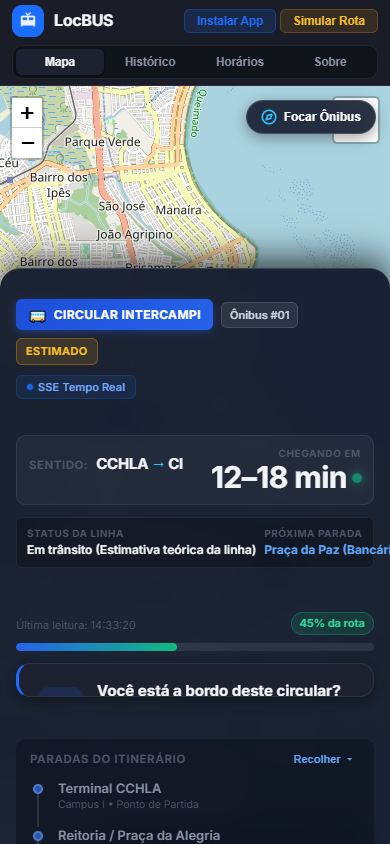
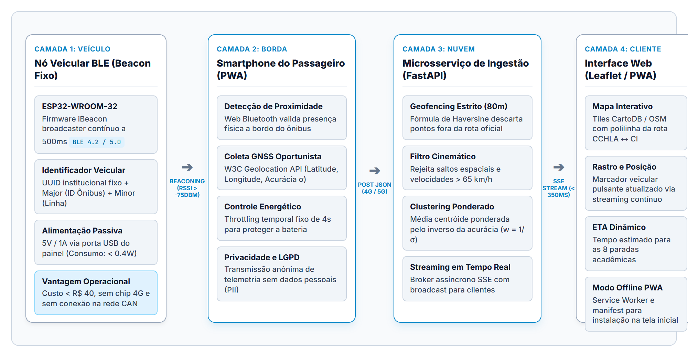
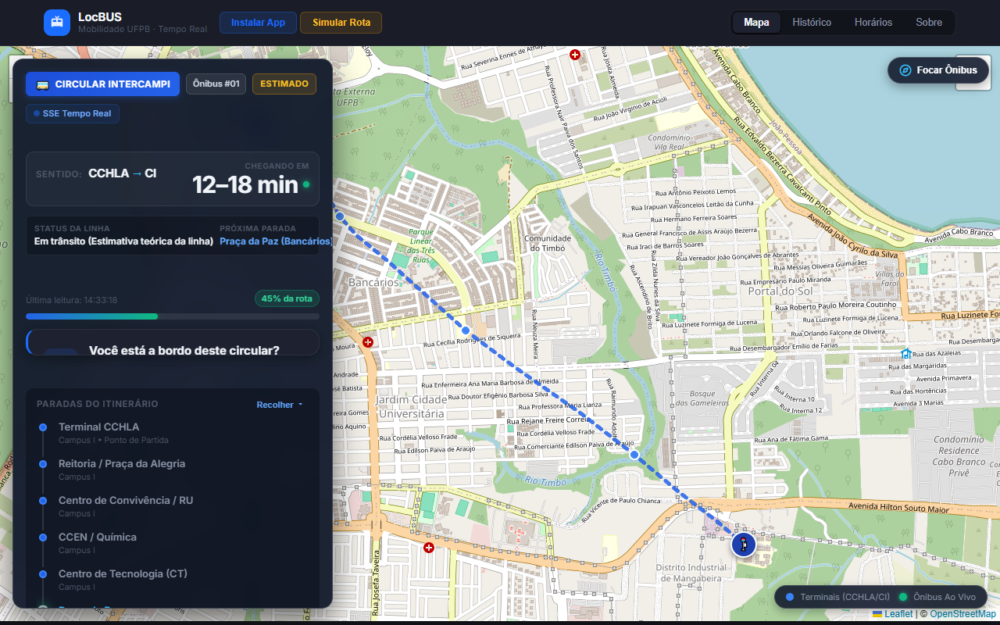
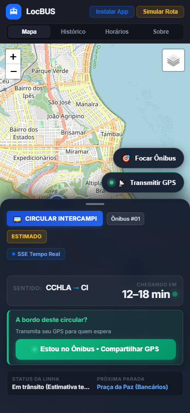

LocBUS: Arquitetura Híbrida de Telemetria e Rastreamento Veicular Colaborativo de Baixo Custo
O Cenário do Transporte Universitário Intercampi (UFPB)
📍 Dimensão da Operação
- Ligação obrigatória entre Campus I (Castelo Branco) e Centro de Informática (Mangabeira);
- Percurso viário superior a 14 km por ciclo completo;
- Atravessa corredores de tráfego intenso (Av. Sérgio Guerra / Bancários);
- 8 paradas principais: Terminal CCHLA, Reitoria, RU, CCEN, CT, CE, Praça da Paz e CI Mangabeira.
⚠️ Impactos da Falta de Previsibilidade
- Passageiros aguardam nas paradas no escuro, sem saber se o ônibus acabou de passar ou se atrasará 30 min;
- Exposição a intempéries climáticas e vulnerabilidade de segurança pública nos pontos isolados;
- Superlotação repentina nas paradas e atrasos em avaliações acadêmicas práticas.
A Assimetria Informacional e o Dilema de Custos
🏛️ O Dilema da Universidade Pública
- Orçamento Custeio Rígido: Impossibilidade de assumir despesas de custeio mensal recorrente com chips M2M;
- Frotas Mistas e Terceirizadas: Ônibus alugados não permitem instalação invasiva na fiação elétrica ou computador de bordo CAN;
- Sistemas Proprietários Fechados: Softwares de mercado exigem contratos milionários de licenciamento.
🎯 A Pergunta Científica
"É possível alcançar a mesma confiabilidade e precisão determinística de um rastreador veicular dedicado, aproveitando a conectividade e sensores dos smartphones dos passageiros, eliminando o custo de planos de dados e blindando o sistema contra o ruído de pedestres?"
Sistemas AVL (Automatic Vehicle Location) Convencionais
✓ Vantagens Técnicas
- Receptores GNSS veiculares de alta sensibilidade com taxa de atualização de 1 a 5 Hz;
- Transmissão ininterrupta via modem celular embarcado (GPRS/4G/LTE);
- Independente da presença ou ação de qualquer passageiro;
- Possibilidade de telemetria CAN (velocidade de roda, hodômetro, combustível).
✕ Desvantagens e Barreiras Críticas
- Custo de Aquisição: R$ 1.500 a R$ 2.500 por equipamento homologado;
- Custo Recorrente Vitalício: R$ 60 a R$ 120 mensais por chip M2M contratado;
- Instalação Invasiva: Corte de chicote elétrico e conexão na bateria do veículo, gerando conflito com operadoras terceirizadas;
- Inviabilidade em Frotas de Médio/Pequeno Porte: Risco financeiro alto em caso de quebra ou rescisão contratual.
Crowdsourcing Comunitário e Tecnologias de Proximidade (BLE)
📱 Crowdsourcing Puro (Waze / Moovit)
- Custo de Hardware Zero: Aproveita os sensores já existentes nos celulares da população;
- Falha Crítica 1 (Falso Positivo): Não diferencia se a pessoa está no ônibus ou caminhando a pé na calçada ao lado da parada;
- Falha Crítica 2 (Vulnerabilidade): Totalmente exposto a injeção de rotas falsas (GPS spoofing) ou motoristas de aplicativo que abrem o app por engano.
📻 Balizas de Proximidade (Bluetooth Low Energy)
- Microtransmissores Autônomos (ESP32 / iBeacon): Custo de hardware unitário inferior a R$ 40;
- Alimentação Passiva: Conectado diretamente na tomada USB 5V do painel do motorista (consumo < 0.4W);
- Imunidade Determinística: Alcance calibrado para 6 a 8 metros garante que somente quem está dentro da carroceria capture o identificador do veículo.
Matriz de Decisão: Onde as Soluções Atuais Falham
| Dimensão de Análise | AVL Comercial 4G | Crowdsourcing Puro | LocBUS (Nossa Proposta) |
|---|---|---|---|
| Custo de Hardware Veicular | Alto (> R$ 1.500) | Nulo (R$ 0) | Mínimo (< R$ 40 - ESP32) |
| Mensalidade de Conectividade (SIM Card) | Obrigatório (R$ 60-120/mês) | Não (Dados do usuário) | Zero (Planos dos passageiros) |
| Imunidade a Ruídos de Pedestres | Total | Vulnerável (Confunde pedestres) | Total (Autenticação Rádio BLE) |
| Blindagem contra GPS Spoofing | Alta | Baixa (Injeção de coordenadas) | Alta (BLE + Geofencing 80m) |
| Latência de Transmissão ao Usuário | 5 a 15 segundos | 15 a 60 segundos | < 350 ms (Streaming SSE) |
| Instalação no Veículo | Invasiva (Chicote / CAN) | Nenhuma | Plug & Play (USB 5V do painel) |
A Proposta LocBUS: Telemetria Híbrida Simbiótica
⚙️ Fluxo Operacional Simbiótico
O estudante embarca no ônibus. A PWA detecta o sinal de rádio RSSI do ESP32 veicular (> -75 dBm) via Web Bluetooth.
O smartphone inicia a transmissão do seu GPS com intervalo fixo de Δt = 4 segundos para preservar bateria.
O backend FastAPI valida a posição no geofence da rota (80m) e descarta saltos anômalos acima de 65 km/h.
A posição consolidada é distribuída instantaneamente para quem espera nas paradas via Server-Sent Events (< 350 ms).

Requisitos de Engenharia (RFs e RNFs)
📋 Requisitos Funcionais (RFs)
- RF01 (Autenticação BLE): Rastreamento colaborativo só é aceito mediante validação do rádio veicular;
- RF02 (Geofencing Contínuo): Descarte imediato de telemetria além de 80 metros do eixo viário oficial;
- RF03 (Filtro Cinemático): Descarte de saltos de GPS ou velocidades computadas superiores a 65 km/h;
- RF04 (Clustering Ponderado): Agregação de múltiplos passageiros ponderada pelo inverso da acurácia ($1/\sigma$);
- RF05 (Difusão SSE): Publicação contínua unidirecional para os passageiros.
⚡ Requisitos Não-Funcionais (RNFs)
- RNF01 (Latência Estrita): Latência fim a fim inferior a 500 ms (alcançado ~220 ms);
- RNF02 (Eficiência Energética): Throttling de 4 segundos e uso de cache rápido de GNSS;
- RNF03 (Universalidade PWA): Execução direta no navegador sem exigir download em lojas (Google Play / App Store);
- RNF04 (Privacidade e LGPD): Transmissão anônima em memória volátil com TTL; zero armazenamento de CPF, IMEI ou dados pessoais.
Arquitetura Desacoplada em 4 Camadas

Geofencing Haversine e Clustering Ponderado
📐 Validação Esférica de Geofencing
Cálculo da distância geodésica mínima entre o ponto recebido do smartphone $P(\phi_p, \lambda_p)$ e o eixo do segmento viário $S(\phi_s, \lambda_s)$:
Condição de Aceite: d ≤ 80 metros
Qualquer ponto recebido de passageiro com desvio perpendicular superior a 80m é automaticamente descartado pelo backend antes do clustering.
🎯 Centróide Ponderado por Inverso da Acurácia
Quando múltiplos passageiros transmitem simultaneamente a bordo do mesmo veículo:
X_bus = ( Σ wₖ · Xₖ ) / ( Σ wₖ )
Efeito Estatístico: Se um passageiro com smartphone moderno possui acurácia de 3m ($w = 0.33$) e outro com sinal fraco possui 20m ($w = 0.05$), a coordenada de alta precisão tem peso 6.6 vezes superior na posição do ônibus.
Resultados da PoC: Simulação e Teste de Campo Real


Conclusão, Próximos Passos e Contribuição
🎓 Conclusão Científica & Técnica
- A fusão de microbalizas de rádio BLE (< R$ 40) com a conectividade oportunista de passageiros elimina definitivamente a dependência de modems 4G veiculares pagos;
- A combinação de geofencing contínuo e clustering ponderado resolveu a clássica fraqueza de ruído do crowdsourcing comum;
- A arquitetura provou ser viável para implantação imediata em universidades públicas e frotas municipais de pequeno e médio porte.
🚀 Cronograma de Continuidade
- Fase 1 (Próximo Mês): Instalação física dos primeiros módulos ESP32 nos circulares oficiais da UFPB;
- Fase 2: Teste discente em larga escala com alunos do Centro de Informática (Mangabeira);
- Fase 3: Algoritmo preditivo de ETA baseado em histórico horário de tráfego na Av. Hilton Souto Maior.